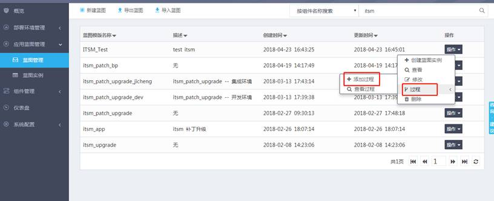
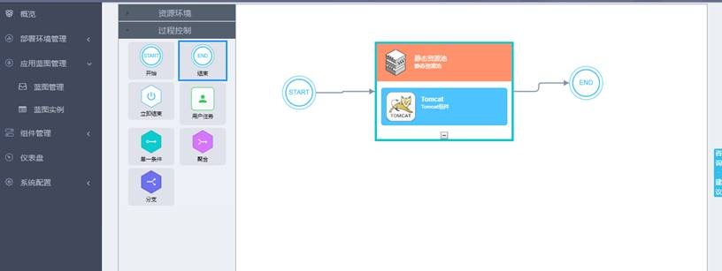
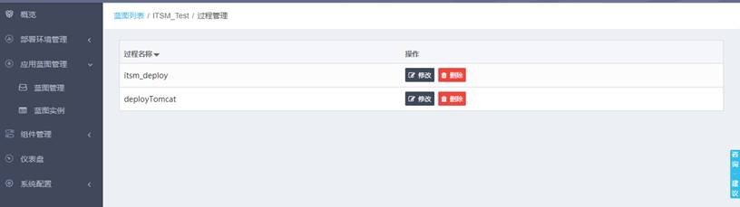
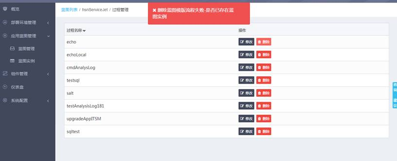
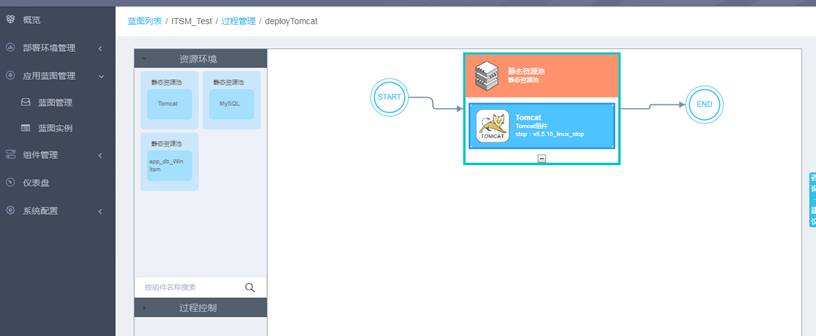

“应用蓝图管理”-->“蓝图管理”，点击蓝图名称右侧的“操作”，点击“过程”，选择“添加过程”按钮可以跳转到蓝图过程设计器界面。

如下图所示。有关蓝图过程的使用请参见附录三（蓝图过程设计器操作指南）。

点击蓝图列表中某个蓝图的“操作”-->“过程”-->“查看过程”按钮，可以查看已添加的所有过程，如下图所示。

点击“删除”可以删除某个过程，但是如果有蓝图实例正在使用该过程，那么页面会提示不可删除，如下图所示。此时如果想继续删除，就需要先删除使用该过程的蓝图实例。

点击“修改”按钮，就会跳转到如下页面（与添加过程的页面是类似的）。可以修改过程之后，点击“更新过程”对过程进行更新。也可以查看页面最下方过程对应的json报文数据。还可以粘贴一段新的报文数据进行载入。
